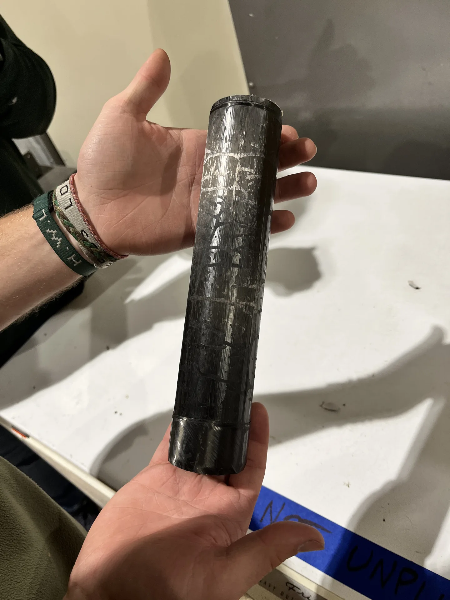
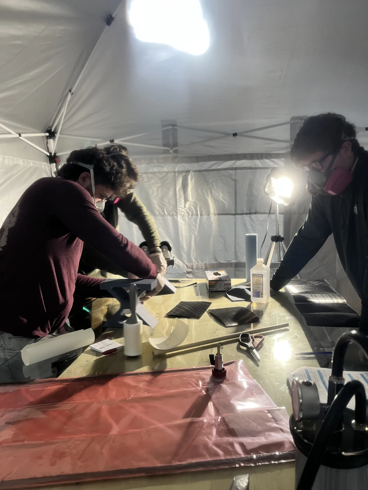
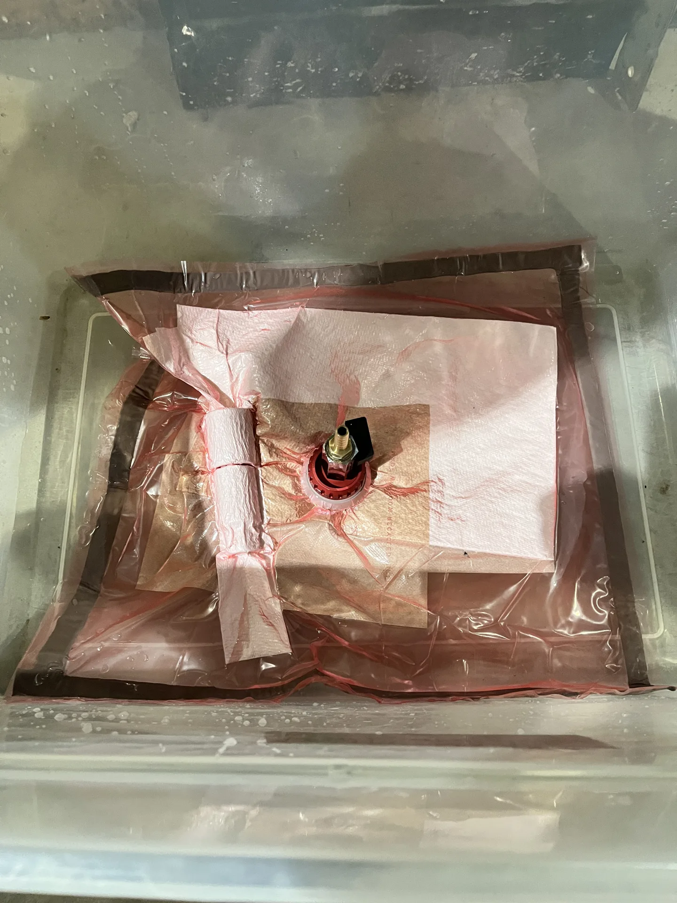

Prepreg Carbon Fiber Test Airframe
Before laying up the flight airframe, we made a 12-inch carbon fiber test tube. It gave us a chance to run the entire process once, from cutting the prepreg to releasing the cured tube from the mandrel, while the part was still small enough to troubleshoot.
My focus: Co-wrote the layup process sheet, led execution and on-the-fly process changes during the layup, owned materials and equipment readiness, and set direction for the team.

- Material
- Toray 2510 UD T700G prepreg
- Ply schedule
- [0/90/0/45/−45/0/90/0], 8 plies
- Mandrel
- 1.910 in OD aluminum, 12 in long
- Nominal wall
- 0.048 in (8 × 0.006 in)
Purpose
Our full-scale procedure was written for a larger tube. I wanted to know whether the steps actually worked in the lab before we committed more expensive material and longer mandrels. We logged material handling, layup, bagging, cure, demold, and inspection so we could tell which steps needed to change.
Mandrel prep & layup
We cleaned the aluminum mandrel with IPA and applied several coats of release wax. After the prepreg reached room temperature, we cut the plies to the measured mandrel circumference and laid them up in the specified orientations. We worked wrinkles and trapped air out as we went and debulked the stack after every four plies.

Vacuum bagging
We used release film, breather, and a high-temperature vacuum bag, with a thermocouple mounted on the part. Before curing, we isolated the pump and checked how much vacuum the bag lost over five minutes. That test helped catch leaks while we could still fix them.

Cure
The oven ramped to 270 °F, held for two hours, and cooled under controlled conditions. We timed the hold from the part thermocouple, not just the oven display. At Fort Collins' elevation, the available vacuum is lower than the sea-level value commonly given in process sheets, so we corrected the target for local atmospheric pressure.
Demold & finishing
We put the tube and aluminum mandrel in a freezer together. Aluminum contracts more than cured carbon fiber, which let us slide the tube off without hammering on it. Afterward, we checked for wrinkles, voids, and resin-rich areas, then wet-sanded and measured the tube.
Results
The test article gave us a working procedure for larger airframes. Final measured dimensions and inspection records will be added here once verified.